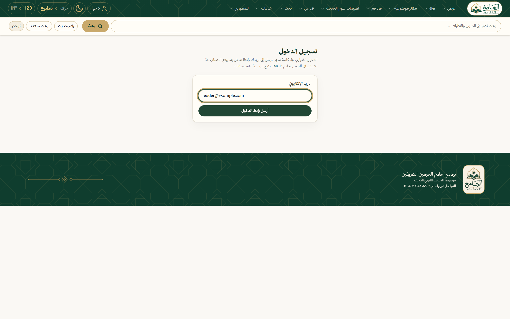
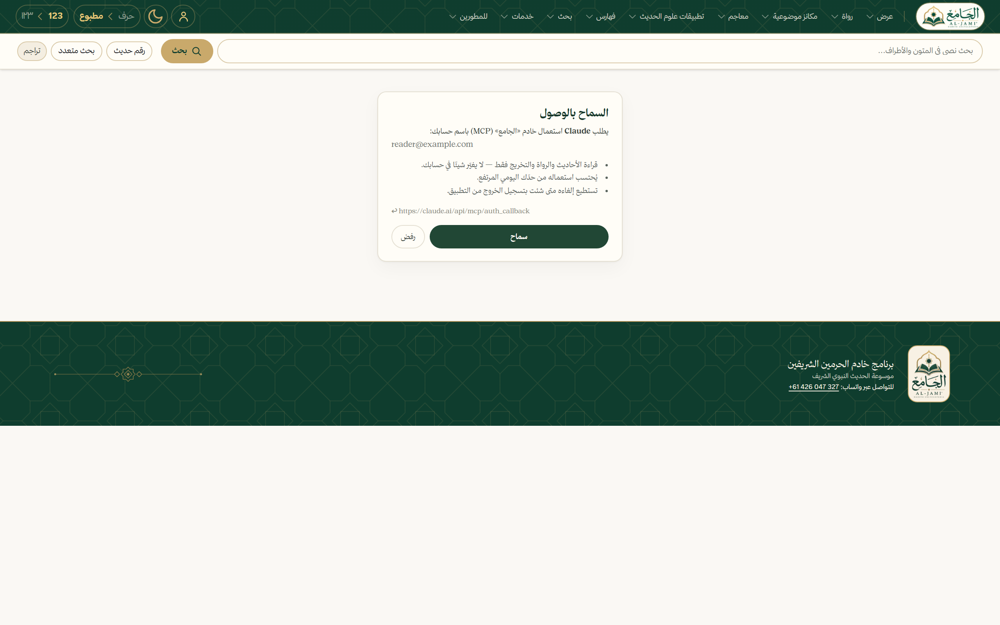

$ ✓ Added HTTP MCP server hadith
search_hadith البحث: الطهور شطر الإيمان — ١٢ نتيجةget_hadith صحيح مسلم ٢٢٣ — السند والمتن والحكمget_parallels ١٦ روايةً في كتب السنةأخرجه مسلم (٢٢٣) عن أبي مالك الأشعري: «الطُّهُورُ شَطْرُ الْإِيمَانِ، وَالْحَمْدُ لِلهِ تَمْلَأُ الْمِيزَانَ…»
خلاصة حكم المحدث (مسلم): صحيح — كما في الدرر السنية
وعند الترمذي (٣٥١٧): «الْوُضُوءُ شَطْرُ الْإِيمَانِ»، وعند النسائي: «إِسْبَاغُ الْوُضُوءِ شَطْرُ الْإِيمَانِ… وَالزَّكَاةُ بُرْهَانٌ»
hadith.dev/hadith/12175 · dorar.net/h/TvSSnRwa
search_hadithفي المتون والأطراف، دون تأثّرٍ بالتشكيل
get_hadithالسند والمتن والأرقام وحكم الدرر السنية
get_parallelsالروايات في كتب السنة بألفاظها
search_narratorsبين ٣٠٬٠٨٧ راويًا
get_narratorمرتبته عند ابن حجر والذهبي، ووفاته وطبقته
list_booksكتب الموسوعة وأصحابها